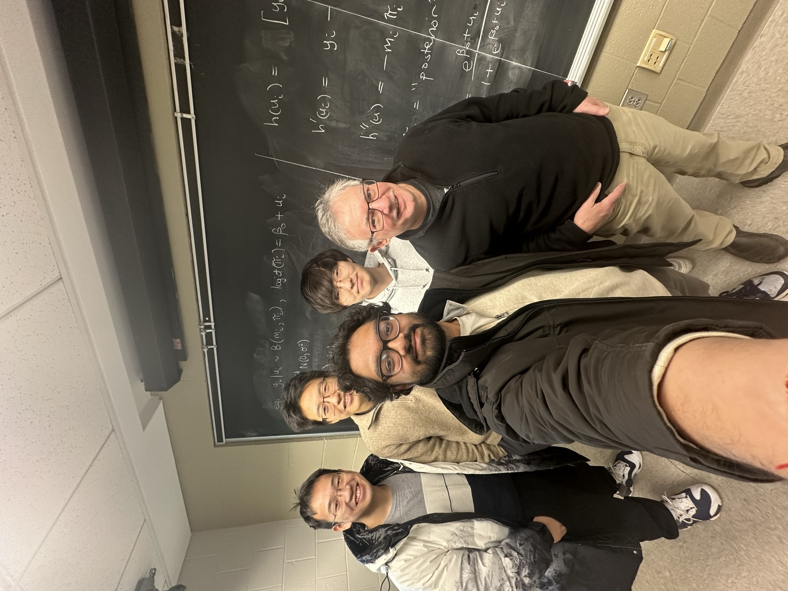
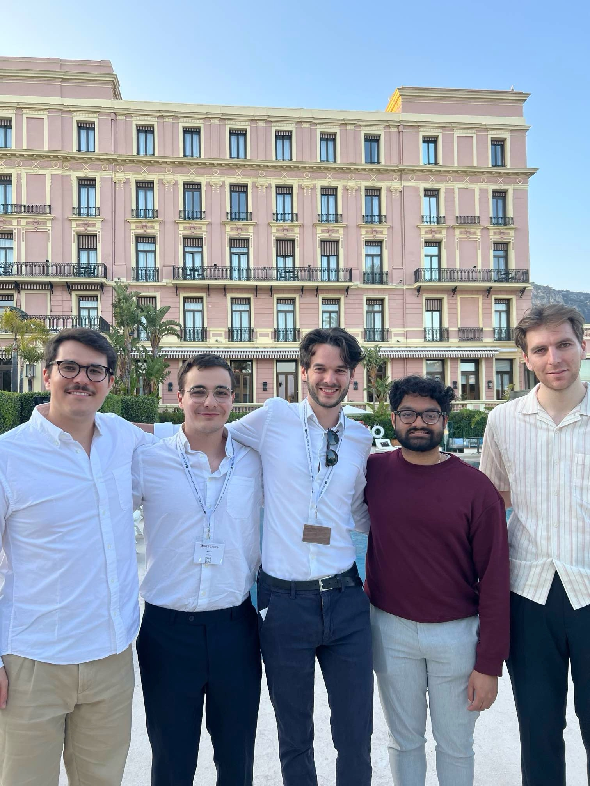
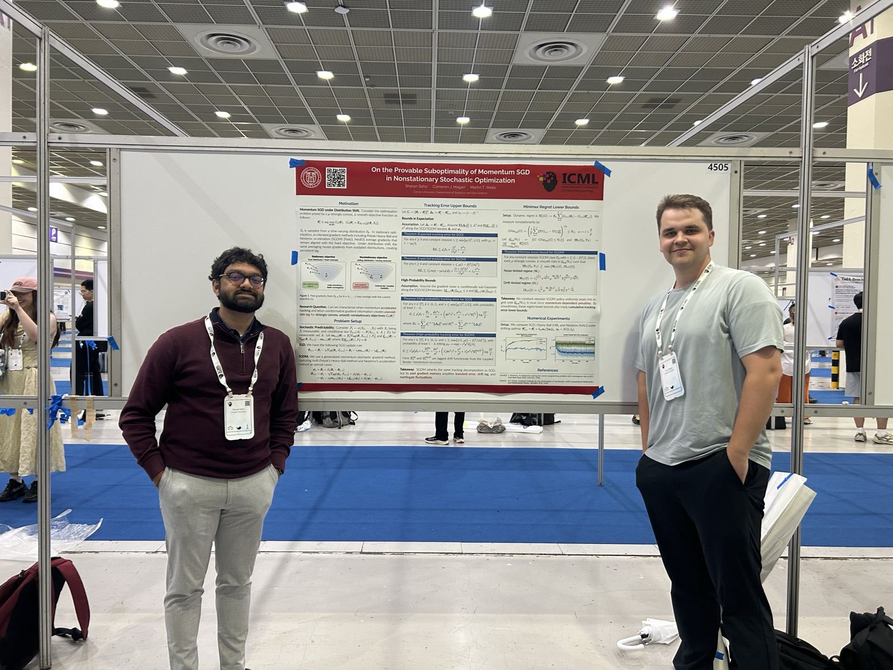
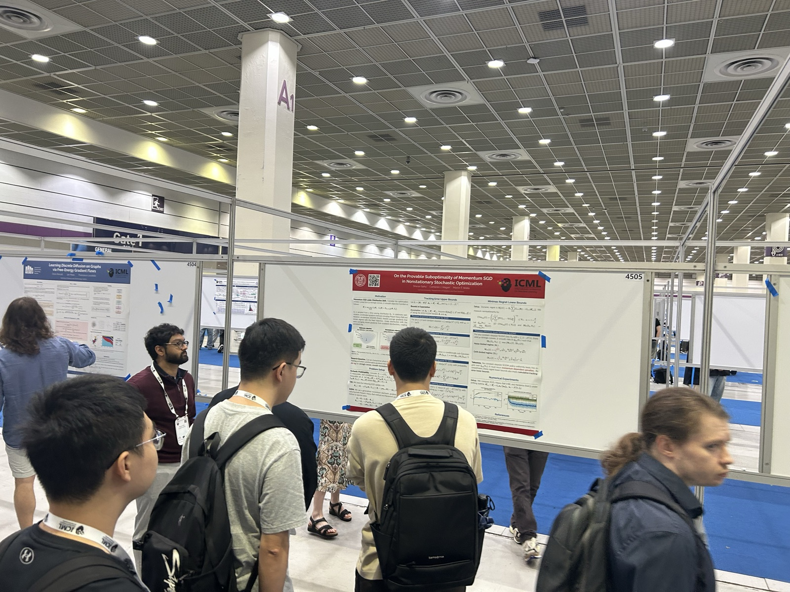

Grad School

Last class of linear models my first semester of grad school with my cohort and Professor Jim Booth.

With colleagues at a G-Research event in Nice, France.
My first machine learning conference at ICML 2026.

Presenting our poster at ICML 2026.

Talking through the poster with fellow attendees at ICML 2026.